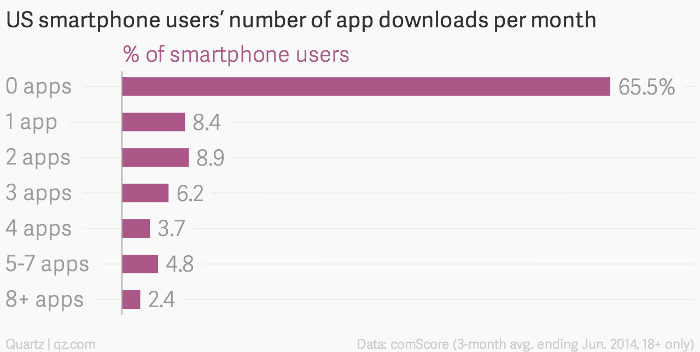

Progressive Web Apps
What has the web ever done for us?
Gareth Jones - @nomiddlename
The Plan
- Native apps are awesome!
- Native apps suck!
- What can we do? (SPOILER: PWAs)
- How do we do it?
- Browsers: Oh, FFS (SPOILER: Google)
- The summary for the people who fell asleep
Native apps are awesome!
Performance
Time to first interaction
The average load time for mobile sites is 19 seconds over 3G.
53% of mobile site visits are abandoned if pages take longer than 3 seconds to load.Doubleclick Report
Repeat customers
Home screen
Push notifications
Up yours, WWW.
Native apps suck!
Most people don't install apps
 http://qz.com/253618People aren't looking for apps
App stores
Barriers
Every step between your users and installing your app loses you 20% of them.

Things to do in Canberra
Go on, go on, go on.
What has the web ever done for us?
Nothing
Well, there's links
...and searching
...and freedom from walled gardens
But apart from that?
Nothing.
In summary
- Nobody will find your app.
- Nobody will install your app.
- Nobody will use your app.
- You will die penniless and alone.
If only there was another way?
Surprise: Progressive Web Apps!
PWAs
Web Apps
Progressive
Time to first interaction
Service Workers!
Getting onto the home screen
Manifests!
SpammingIncreasing Customer Engagement
Push notifications!
Service Workers
1. HTTPS only (localhost counts as secure)
2. Let the browser know about the service worker.

Don't use my dodgy code.
Manifests
Makes your app installable.
{
"name": "POW! Conference 2016",
"short_name": "POW! 2016",
"start_url": "/pow/",
"display": "standalone",
"background_color": "white",
"description": "Schedules and speakers for the exciting POW! Conference 2016",
"icons": [
{ "src": "images/logo.png", "sizes": "192x192", "type": "image/png" }
]
}
When do you get to install?
- HTTPS + Service Worker
- Manifest with "short_name", "start_url", and an icon
- User visits at least twice, with at least 5 mins between
Annoying?
beforeinstallprompt event
Push notifications
1. Ask for permission
2. Send a message
3. Receive the message
Complications
Up yours, native apps!
Browsers: Oh, FFS
Browser support
Android - two thumbs up
- Service-workers ✓
- Manifest ✓
- Push notifications ✓
iOS
- Service-workers ✗
- Manifest ✗
- Push notifications ✗
TL;DR
PWAs bring some benefits of native apps
- Time to first interaction - Service Workers!
- Install to home screen - Manifests!
- User engagement - Push Notifications!
Homework
- Offline-first - Udacity
- Google's developer pages
- serviceworke.rs - Cookbook of SW examples
- isserviceworkerready?
- Lighthouse - PWA audit tool
-
People to follow:
- Alex Russell - @slightlylate
- Addy Osmani - @addyosmani
- Jake Archibald - @jaffathecake
Who was that masked man?
Gareth Jones
@nomiddlename